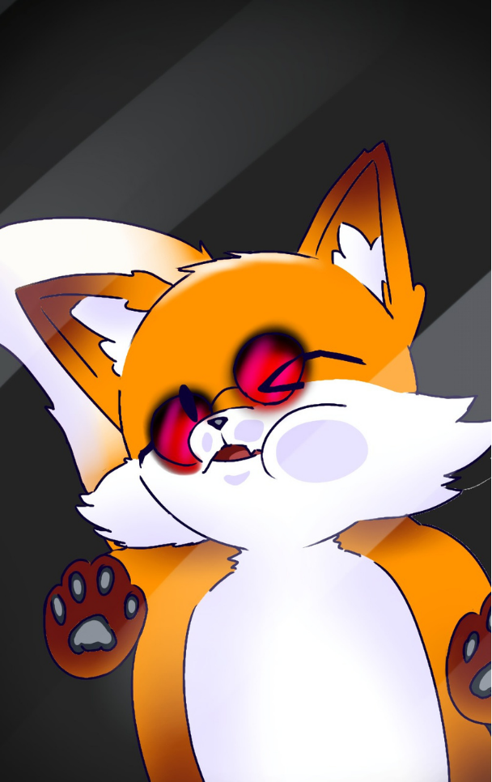

DIGITAL GOSHT SOFTWARE APRESENTA
YOKAI TAILS
Uma aventura inspirada no folclore japonês.
SOBRE O JOGO
UMA AVENTURA MISTERIOSA
Yokai Tails é um projeto de jogo desenvolvido como trabalho acadêmico.
O jogo apresenta uma aventura inspirada na cultura e no folclore japonês, trazendo criaturas conhecidas como Yokai.
O projeto tem como objetivo aplicar conhecimentos de programação, desenvolvimento de jogos, narrativa, personagens e design.
A personagem principal da aventura é Foxy, uma raposa que percorre um mundo fantástico repleto de mistérios.

FOXY
A protagonista de Yokai Tails.
FOXY
A protagonista é uma raposa que embarca em uma aventura por um mundo misterioso.
FOLCLORE JAPONÊS
O projeto utiliza elementos inspirados na cultura e no folclore japonês.
AVENTURA
Exploração, desafios e encontros com diferentes criaturas.
PROJETO ACADÊMICO
Yokai Tails faz parte de um trabalho desenvolvido para fins educacionais. A proposta é aplicar conhecimentos de desenvolvimento de jogos, programação, design e gerenciamento de projetos.